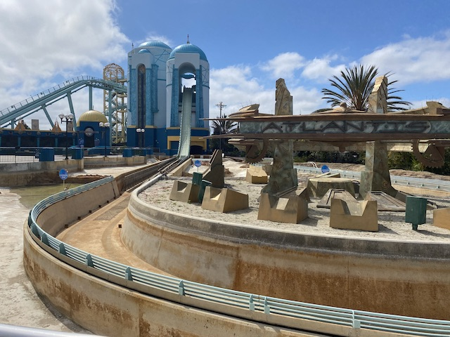
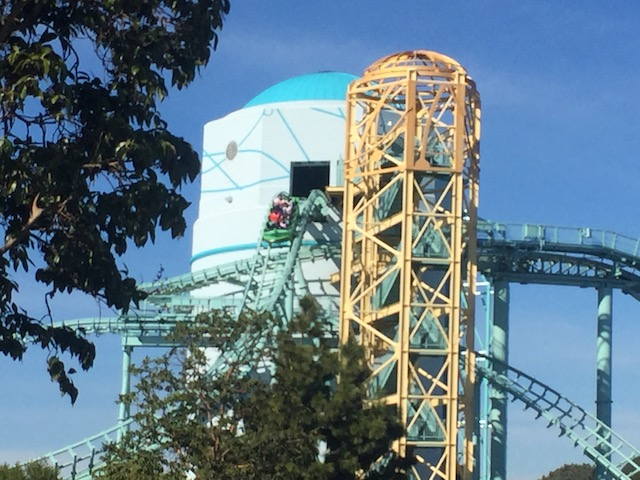
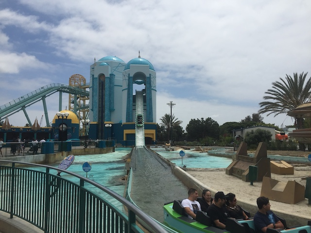
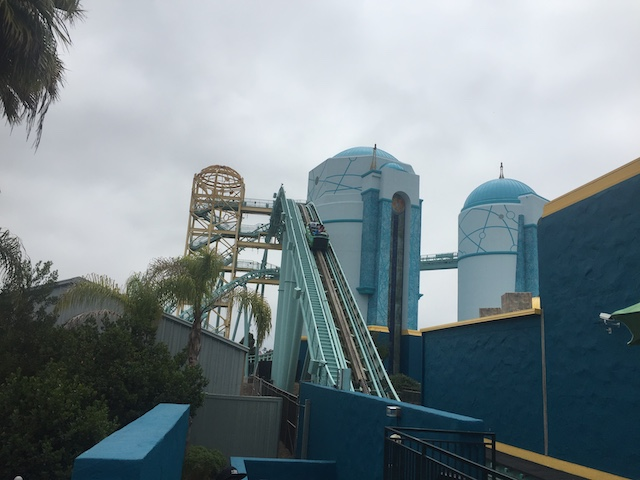
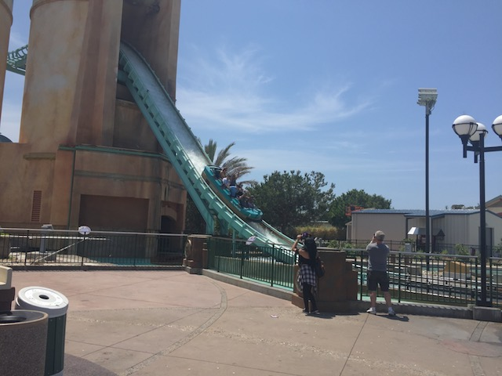

| |
Journey to Atlantis Review

Today at Sea World San Diego, we'll be reviewing Journey to Atlantis. Sea World San Diego's water coaster. So it will usually get a long line on hot days, but at least it's very well themed. Then you get into the boats, your butt will get wet since this is a water coaster. So that's not pleasent. Anyways, we head on up the lifthill. When we crest the lifthill, we can clearly see the second lifthill cresting right above us. But we then we are going through some turn and some straight track. Oh yeah. And I forgot to mention that there's an onride soundtrack. The woman says something weird , but I forget what, probably something about Atlantis, but we then have to go through the first drop and through the flume part of the ride. Now we see a bowl dumping some water on the drop, so we duck in fear of that. Luckily, it doesn't get you that wet. Though the splash at the bottom will get you wet. Then you go through a turn and are shown off to all the people watching you from in the line. After what feels like the end of a shoot the chutes is only the first half of Journey to Atlantis. We then head up straight into an elevator lifthill. For me, this is the best part of the ride as the lifthill sways and rocks, and definetly feels very cool. Then we get to the top and now it's time for Part 2. First, you get a glimpse of the parking lot, but then you twist down into a twisted drop before curving back up underneath the first lifthill. Then you head into another small twisted drop. After going through a banked turn, you go through a small drop and into the final splashdown. One thing I really like about this ride is that you don't get too wet on it. So that's a positive for me. I'd definetly ride this if you are at Sea World San Diego as it is a credit, and a fun one at that.
5/10
Location: Sea World San Diego
Opened: 2004
Built by: Mack
Last Ridden: April 8, 2024
Journey to Atlantis Photos








Home
|